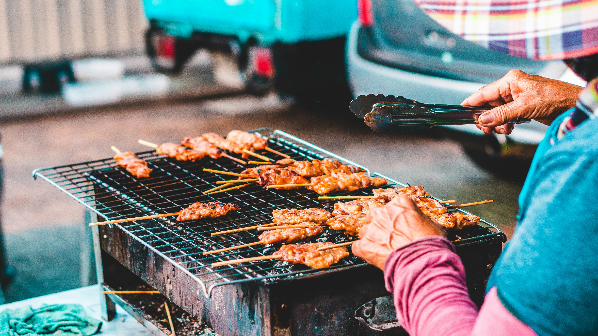
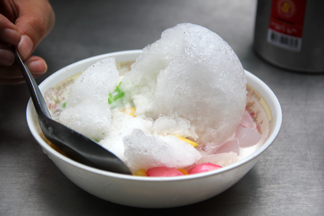

Thai Street Food A Flavorful Adventure
Thai street food is a vibrant reflection of Thailand’s culture, tradition, and bold flavors. From the bustling streets of Bangkok to local markets in Chiang Mai and Phuket, street food offers fresh, affordable, and mouthwatering dishes prepared right before your eyes. Every bite bursts with spicy, sweet, sour, and savory flavors, capturing the essence of Thai cuisine and giving both locals and travelers an unforgettable culinary experience.
Among the many delights, grilled foods such as skewered chicken, pork, or seafood are favorites. Often marinated with herbs, spices, and sauces, they are grilled over charcoal to perfection, releasing a smoky aroma that fills the air and tempts passersby.
For something sweet and refreshing, Thai street food also features shaved ice desserts. These colorful treats are topped with sweet syrups, red beans, jellies, fruit, and condensed milk, offering a cool, sweet contrast to the spiciness of savory dishes.
From fiery grilled meats to icy desserts, Thai street food presents an incredible variety of flavors and experiences, making wandering through Thailand’s streets a truly immersive culinary adventure.

Grilled Food

Shaved Ice Desserts